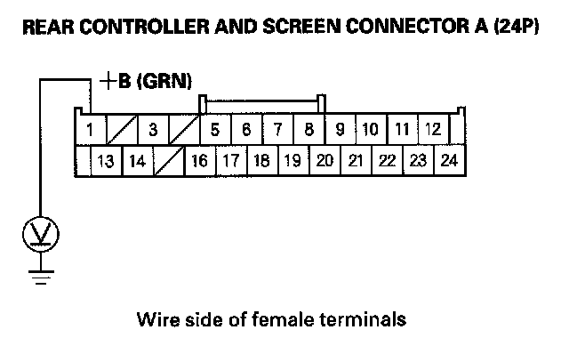
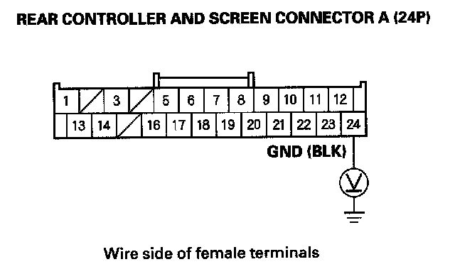

Black picture is shown on the display
Black picture is shown on the displayNOTE: If the navigation system, or XM radio do not function properly, troubleshoot and resolve those problems first.
1. With the ignition switch ON (II), push the rear power switch ON to see if the screen turns ON.
Does the screen come ON?
YES - Operation is normal at this time.
NO - Go to step 2.
2. Check for brightness settings in the display set up (refer to the Owner's Manual for more information).
Are the display setting set properly?
YES - Go to step 3.
NO - Adjust the display setting and recheck the function.
3. Check the No. 9 (7.5 A) fuse in the main under-hood fuse box.
Is the fuse OK?
YES - Go to step 4.
NO - Replace the fuse, and recheck.
4. Remove the display cover. Then check that the rear controller and screen is properly connected.
Is the rear controller and screen connected properly?
YES - Go to step 5.
NO - Reconnect the connector, and recheck the function.
5. Disconnect the rear controller and screen connector A (24P).

6. Measure the voltage between the No. 1 terminal of the rear controller and screen connector A (24P) and body ground.
Is there battery voltage?
YES - Go to step 7.
NO - Repair open in the wire(s) between the No. 9 (7.5 A) fuse in the main under-hood fuse box and the rear controller and screen.
7. Reconnect the rear controller and screen connector A(24P).

8. Measure the voltage between the rear controller and screen connector A (24P) terminal No. 24 and body ground.
Is there less than 0.1 V?
YES - Replace the rear controller and screen.
NO - Repair open in the wire between the rear controller and screen connector A (24P) terminal No. 24 and body ground (G506).